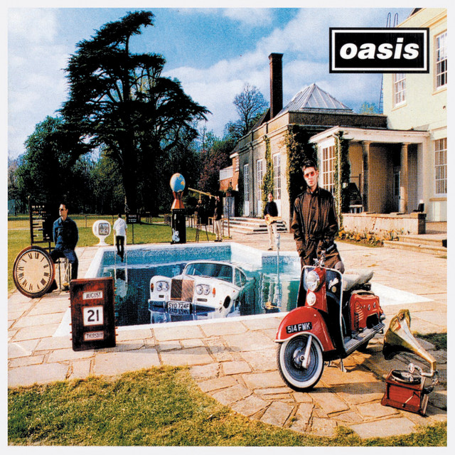

Visual Tertata
Semua bagian dirancang supaya tampil bersih dan enak dibaca sejak pertama dibuka.
Welcome To My Space
Network Engineer | Beginner Front-End Developer
Saya suka membangun tampilan web yang rapi, nyaman dilihat, dan tetap punya karakter. Portofolio ini saya susun untuk memperlihatkan siapa saya, apa yang saya pelajari, dan bagaimana saya berkembang lewat proses.

Oasis
Why This Site
Semua bagian dirancang supaya tampil bersih dan enak dibaca sejak pertama dibuka.
Tampilan tetap rapi di laptop, tablet, maupun layar HP tanpa perlu zoom in atau zoom out.
Ada animasi sederhana dan filter koleksi agar website terasa hidup tanpa berlebihan.
Quick Story
Saya tertarik pada dunia jaringan komputer dan mulai belajar front-end untuk membuat tampilan digital yang lebih menarik. Dari situ, saya ingin menggabungkan sisi teknis dengan presentasi visual yang nyaman untuk orang lain.
Let's Connect